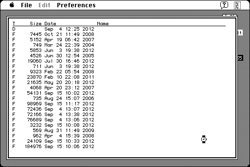

Download
mactar68k.zip (57K) MacTar.68k 4.2.1 repackaged into a zipped hfs disk image and checksum file. The disk image can be mounted with Mini vMac.
mactar68k.sit.hqx (70K) MacTar.68k 4.2.1 in the original format.
copyright: Joe Strout, Craig Ruff
mod date: Oct 18, 1999
license: freeware (can register to receive announcements)
from url :
MacTar
Utility for Tar archive format. Requires System 7.

If you find these downloads useful, please consider helping the Gryphel Project, which hosts them.
Here are the md5 checksums for the downloads, signed with Gryphel Key 5:
--------- GRY SIGNED TEXT --------- 280385c0303be73042a01a80114a608f mactar68k.zip e229532509ef67df17f478b2a86b2b65 mactar68k.sit.hqx ------- BEGIN GRY SIGNATURE ------- Gry/4Xa8CFcUzxdN/HTTWZ8rhr2Ogf7RuPZJGrX6KL9TX+EId6KEob4njZooHrML 32n0p3a6LqudpgWjFhtJdyBGWF/auo2dwpjROKSv7x6TsDMrj5p6MYCDMdhI77zl /DeJBqCnVf6rJy609EymeE2tX39v7qjuMY/X3jJyC52wC3PXwONid+Fl8EJ77ZWK -------- END GRY SIGNATURE --------